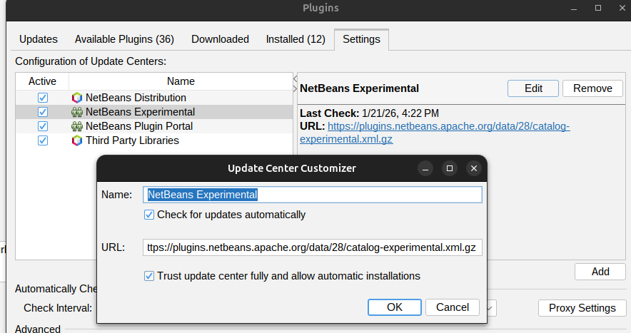
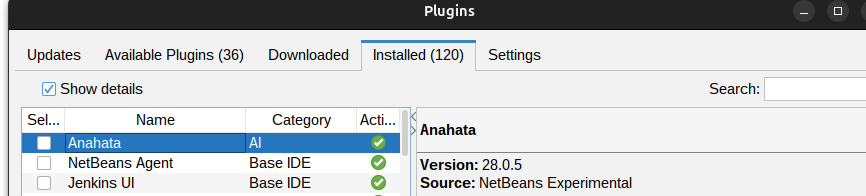

Why install the NetBeans Community Experimental Update Center?
Plugin verification by NetBeans volunteers can take days to weeks. By adding the Experimental Update Center, you can access critical patches (like the Windows startup fix in 28.0.5) immediately.
Installation Steps
1. Open Plugin Settings
In NetBeans, go to Tools → Plugins → Settings tab.
2. Add the Experimental Catalog
Click the Add button and enter the following details:
Name:
NetBeans Community Experimental Catalog
URL:
https://plugins.netbeans.apache.org/data/28/catalog-experimental.xml.gz
3. Enable Updates
Ensure both checkboxes are ticked for the new catalog to receive the latest updates automatically.
